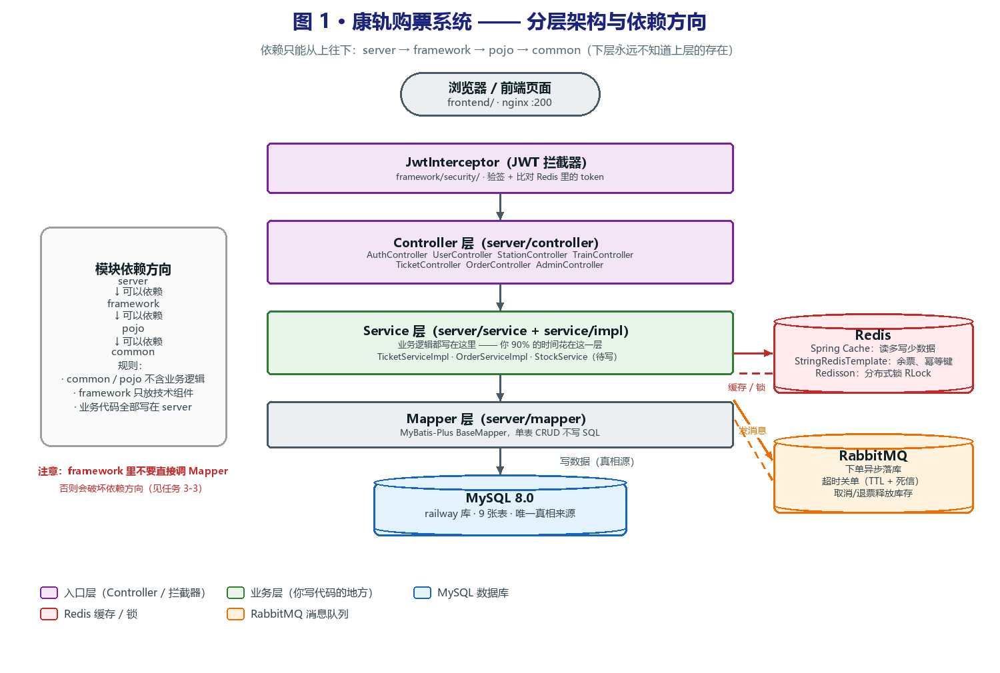
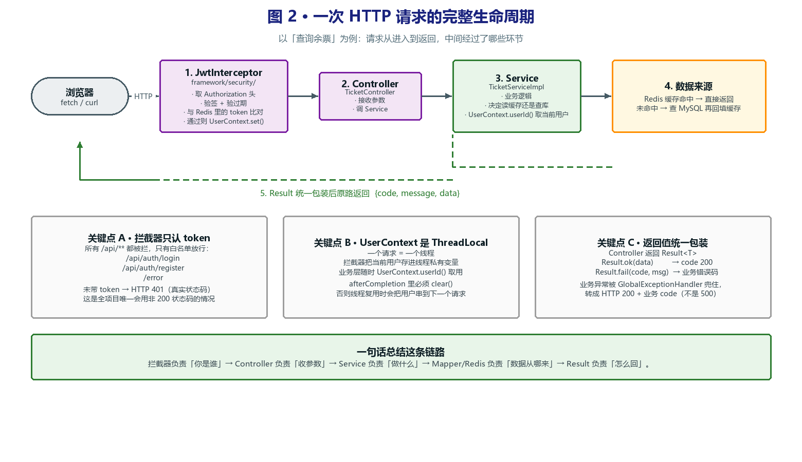
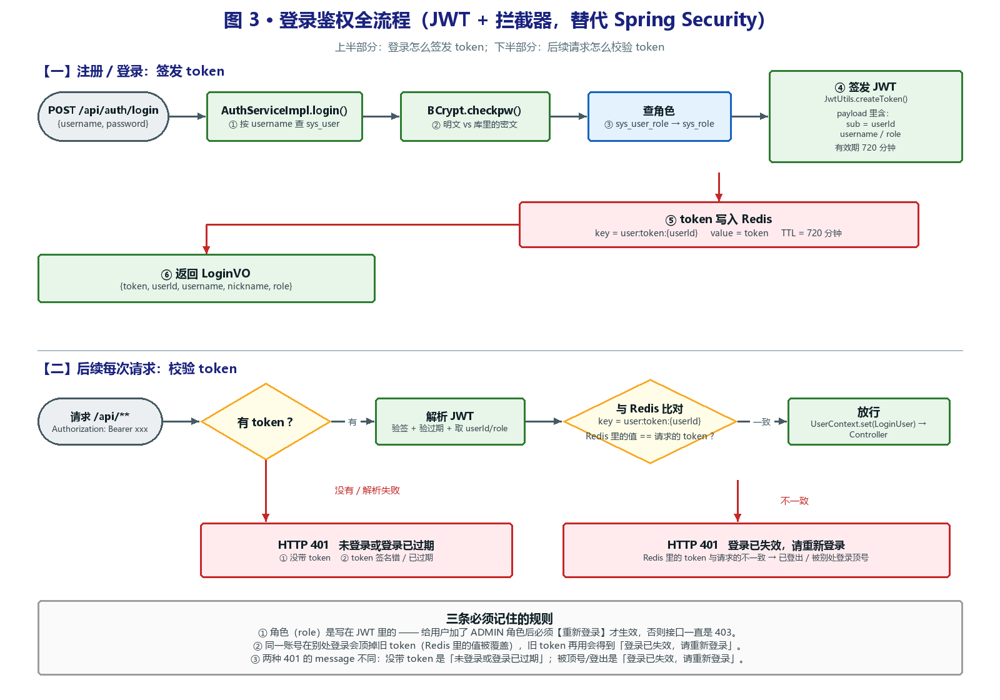
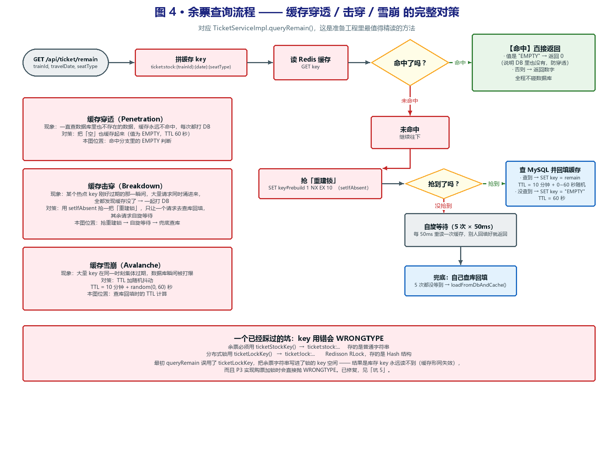
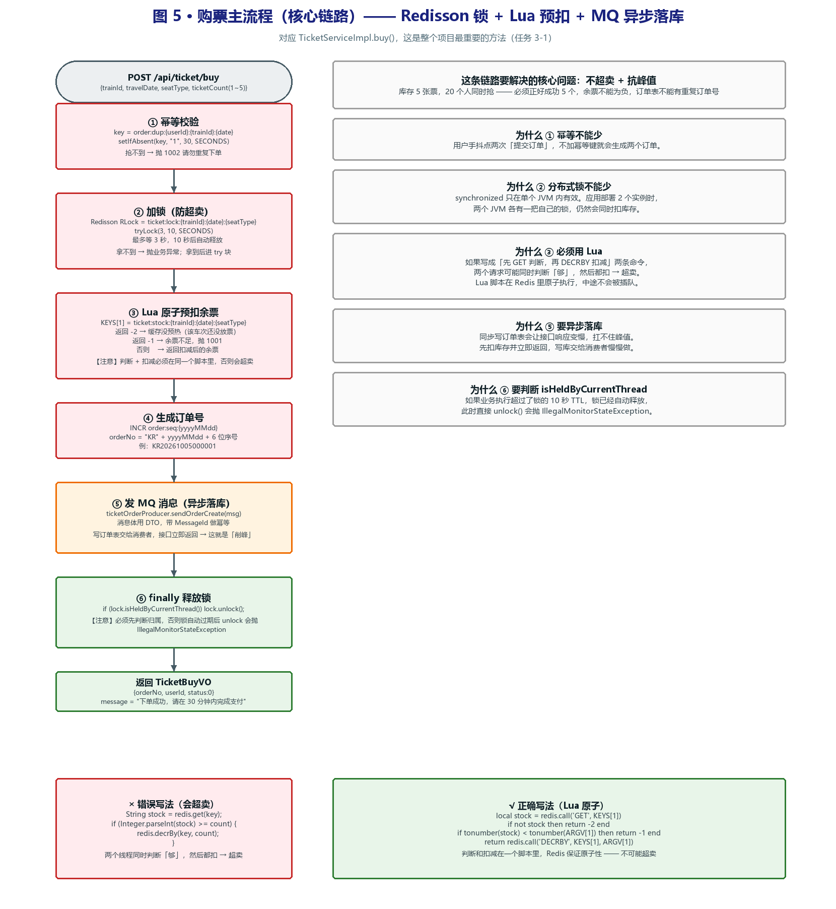
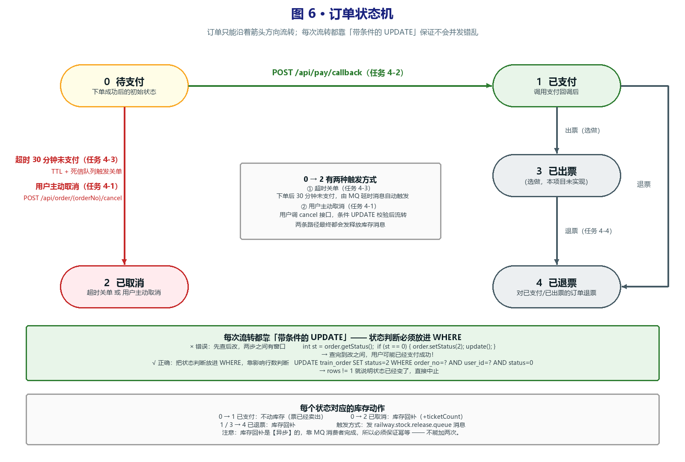
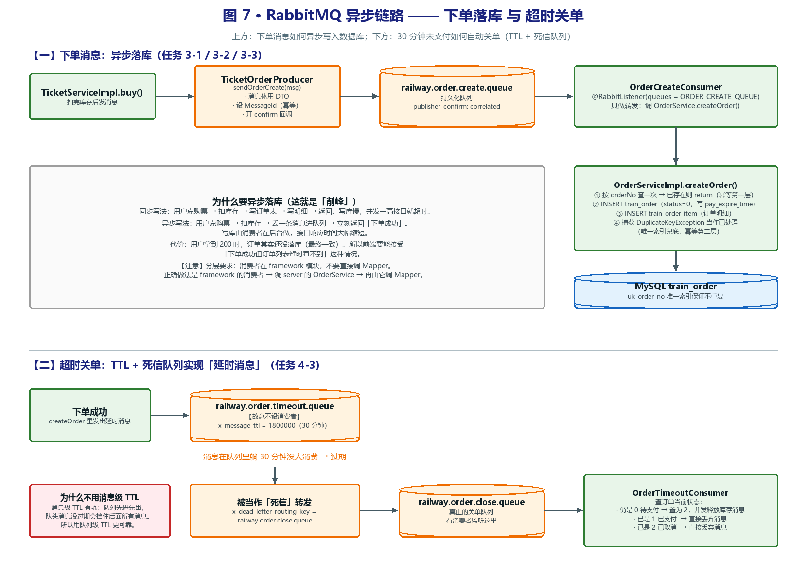
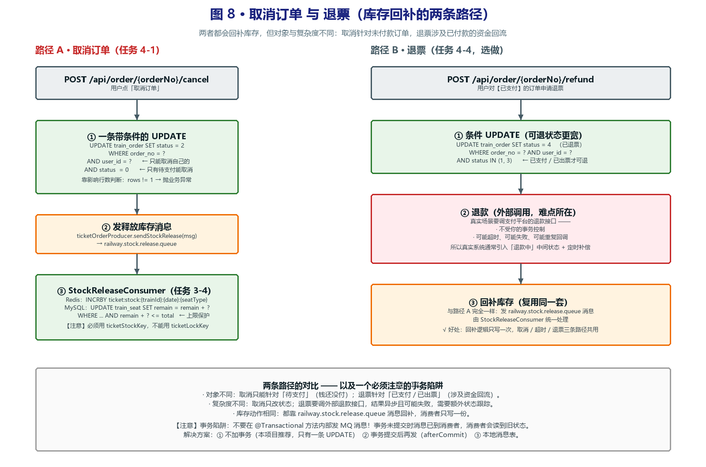
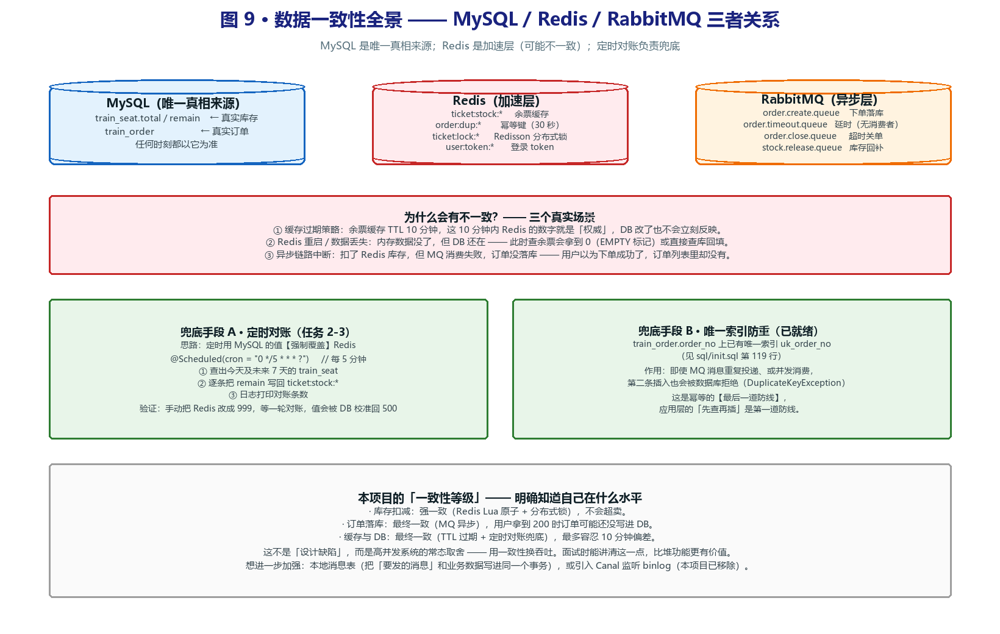

为什么要有这个页面？
这些图是真实的 PNG 文件，放在 docs/diagrams/ 目录下。
开发计划.md 第四章用相对路径引用它们（），
但网页版 Markdown 工具（语雀 / 飞书 / Notion 等）不会解析相对路径，所以那边看不到图。
本页面直接用文件名加载图片，用浏览器打开就一定能看到。也可以直接用文件管理器打开
docs/diagrams/ 目录，逐个双击 PNG。
图 1 · 系统分层架构与依赖方向
对应《开发计划》4.1 节 · 回答「代码应该写在哪个模块、谁能依赖谁」

看图重点
- 中间竖线是一次请求经过的层：浏览器 → 拦截器 → Controller → Service → Mapper → MySQL。
- 你 90% 的时间花在绿色的 Service 层，Controller 只做参数转换，Mapper 只做单表 CRUD。
- 左边箭头是单向的：
server → framework → pojo → common，下层永远不知道上层的存在。
- 右边的 Redis / RabbitMQ 是旁挂的，不在主链路上，Service 需要时才去用。
新手最容易犯的错
- 在 Controller 里写业务逻辑 → 无法复用，MQ 消费者也调不到。
- 在
framework 里直接调 Mapper → 破坏依赖方向（正确做法：调 server 的 Service）。
- 在
common 里写业务工具类 → 造成反向依赖。
图 2 · 一次 HTTP 请求的完整生命周期
对应《开发计划》4.2 节 · 以「查询余票」为例拆解请求全过程

三个必须理解的关键点
- A · 拦截器只认 token：所有
/api/** 都被拦，白名单只有 login / register / error。
这是全项目唯一会用非 200 HTTP 状态码的地方（未登录直接返回 HTTP 401）。
- B · UserContext 是 ThreadLocal：一个请求一个线程，业务层随处可取
UserContext.userId()，但 afterCompletion 必须 clear()。
- C · 返回值统一包装：业务异常被全局处理器兜住，转成
HTTP 200 + 业务 code（不是 500）。
图 3 · 登录鉴权全流程
对应《开发计划》4.3 节 · 对应 P1-认证与权限.md

看图重点
- 上半部分第 ④ 步签发 JWT、第 ⑤ 步写入 Redis。为什么要写两份？因为 JWT 签发后无法撤销，
为了支持登出和顶号，额外在 Redis 存一份当前有效的 token 做比对。
- 下半部分有两条 401 分支，message 不同：
未登录或登录已过期（没带 token / 过期）与
登录已失效，请重新登录（与 Redis 不一致 = 已登出或被顶号）。
三条必须记住的规则
- 角色写在 JWT 里 —— 加了 ADMIN 角色后必须重新登录才生效，否则一直 403。
- 同一账号在别处登录会顶掉旧 token。
UserContext 不能跨线程传递（子线程里取会是 null）。
图 4 · 余票查询与「缓存三兄弟」
对应《开发计划》4.4 节 · 对应 P2-缓存与锁.md 任务 2-1 之前的基础

缓存三兄弟（面试高频）
- 穿透：一直查数据库里也不存在的数据 → 对策：把「空」也缓存（值存
EMPTY，TTL 60 秒）。
- 击穿：热点 key 过期瞬间大量请求打 DB → 对策：
setIfAbsent 抢重建锁，只放一个请求去查库。
- 雪崩：大量 key 同时过期 → 对策：TTL 加随机抖动（10 分钟 + 0~60 秒）。
注意
- 余票必须用
ticketStockKey（ticket:stock:*），
不要用 ticketLockKey（ticket:lock:* 是 Redisson 锁的 Hash 空间），混用会 WRONGTYPE。
- 整条链路只有「未命中」分支会碰数据库，且同一时刻只有一个请求能去查库。
图 5 · 购票主流程（核心链路）
对应《开发计划》4.5 节 · 对应 P3-核心购票链路.md 任务 3-1 —— 整个项目最重要的一张图

要解决的问题
- 库存 5 张票、20 个人同时抢 —— 必须正好成功 5 个，余票不能为负，订单表不能有重复订单号。
六步为什么都不能少
- ① 幂等键：用户手抖点两次 → 不加就会生成两个订单。
- ② 分布式锁：
synchronized 只在单个 JVM 内有效，多实例部署仍会超卖。
- ③ Lua 预扣：判断和扣减必须原子，否则两个线程同时判断「够」然后都扣 → 超卖。
- ④ 订单号：
INCR order:seq:{yyyyMMdd} 生成每日递增序号。
- ⑤ 异步落库：写订单表慢，丢进 MQ 让消费者做 → 这就是「削峰」。
- ⑥ finally 释放锁：必须先
isHeldByCurrentThread() 判断，否则锁超时自动释放后会抛异常。
图 6 · 订单状态机
对应《开发计划》4.6 节 · 对应 P4-订单状态机与支付.md

五个状态
0 待支付 →（支付回调）→ 1 已支付 →（出票，选做）→ 3 已出票0 待支付 →（超时关单 / 用户取消）→ 2 已取消1 / 3 →（退票）→ 4 已退票
核心要点
- 状态判断必须放进 UPDATE 的 WHERE 条件，靠影响行数判断是否成功。
「先查后改」两步之间有窗口，用户可能在这期间支付成功。
- 库存动作：
0→1 不动库存；0→2 和 1/3→4 都要回补库存（异步、必须幂等）。
图 7 · MQ 异步链路与超时关单
对应《开发计划》4.7 节 · 对应 P3-核心购票链路.md 任务 3-3 与 P4 任务 4-3

上半部分：为什么异步落库
- 同步写法要等两次数据库写入；异步写法扣完库存丢一条消息就返回，接口快很多。
- 代价是最终一致：用户拿到 200 时订单可能还没落库。
- 消费端幂等两层防线：应用层「先按 orderNo 查一次」+ 数据库层唯一索引
uk_order_no。
下半部分：延时消息怎么实现
- RabbitMQ 没有「30 分钟后投递」的功能，本项目用 TTL + 死信队列：
一个没消费者的队列设 30 分钟 TTL，过期后被当作死信转发到关单队列。
- 关单消费者收到后必须先查订单状态：还是待支付才关单，已支付就直接丢弃消息。
- 不用「消息级 TTL」的原因：队列先进先出，队头消息没过期会挡住后面所有消息。
图 8 · 取消订单与退票
对应《开发计划》4.8 节 · 对应 P3 任务 3-4 与 P4 任务 4-1 / 4-4

两条路径的区别
- 取消针对「待支付」订单（钱还没付），只需一条 UPDATE + 发消息。
- 退票针对「已支付 / 已出票」订单，涉及资金回流，要调外部退款接口 —— 结果异步、可能失败，复杂得多。
- 两者最后都汇聚到
railway.stock.release.queue，库存回补逻辑只写一份。
必须注意的事务陷阱
- 不要在
@Transactional 方法内部发 MQ 消息：事务未提交时消息已到消费者，
消费者读到的是旧状态。
- 解法：① 不加事务（推荐，只有一条 UPDATE）② 事务提交后再发（
afterCommit）③ 本地消息表。
图 9 · 数据一致性全景
对应《开发计划》4.9 节 · 对应 P2-缓存与锁.md 任务 2-3（定时对账）

三个真实的不一致场景
- 缓存过期策略：余票缓存 TTL 10 分钟，这 10 分钟内 Redis 的数字就是权威。
- Redis 重启：内存数据没了但 DB 还在 → 查余票会拿到 0 或直接查库回填。
- 异步链路中断：扣了 Redis 库存但 MQ 消费失败，订单没落库。
两个兜底手段
- 定时对账：每 5 分钟用 MySQL 的值强制覆盖 Redis（任务 2-3）。
- 唯一索引：
uk_order_no 挡住重复订单（幂等最后一道防线）。
本项目的一致性等级
- 库存扣减：强一致（Lua 原子 + 分布式锁）
- 订单落库：最终一致（MQ 异步）
- 缓存与 DB：最终一致（TTL + 对账兜底，最多容忍 10 分钟偏差）
- 这不是设计缺陷，而是高并发系统的常态取舍 —— 用一致性换吞吐。